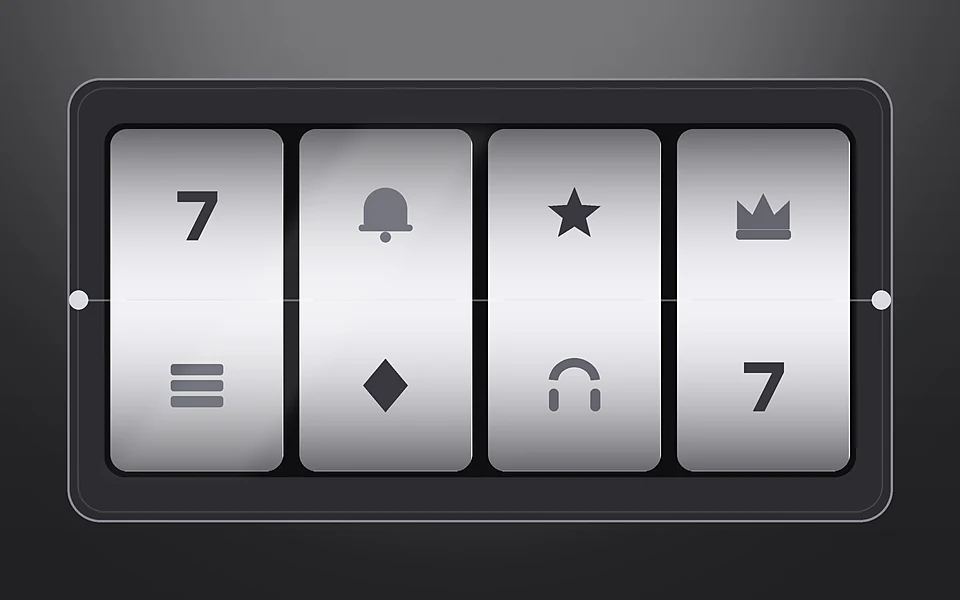

Официальный сайт %brand_name_ru% раскрывается за минуту: витрина грузится первой, подборка автоматов встаёт выше рекламного блока, кнопка захода держится справа. Каталог %brand_name_ru% на этот момент насчитывает 4 800 позиций от двадцати трёх студий, и число это пересчитывается еженедельно. Игровые автоматы %brand_name_ru% подписаны показателем отдачи, ступенью волатильности и вилкой ставки — три величины видны до запуска, а не после. Демо-режим %brand_name_ru% стартует секунд за пять и формы входа не спрашивает. Личный кабинет понадобится минутой позже, когда дойдёт до денег: депозит, вейджер, лимит, верификация и вывод средств живут за ней.
Дальше страница %brand_name_ru% читается ровно в том порядке, в каком площадку осматривают по времени. Сперва витрина, через минуту анкета, к вечеру резервный домен, на второй день сроки кассы, к концу недели бонусная часть по валютам, потом полка провайдеров, отклики и разбор вопросов. Справка %brand_name_ru% выстроена так же, и перескакивать между главами не приходится.
Полка недели %brand_name_ru% меняется по понедельникам, и свежие релизы держатся наверху ровно пять дней.
Первые пятнадцать минут на официальном сайте %brand_name_ru% стоит потратить на три замера, а не на кнопку. Замер первый — сколько позиций в каталоге %brand_name_ru% приходится на одну студию: пять тысяч барабанов от двух поставщиков стоят меньше двух тысяч от двадцати. Замер второй — за сколько секунд стартует пробный запуск и просит ли он форму; у %brand_name_ru% не просит. Замер третий — сколько времени уходит на поиск строки с предельной ставкой: она в главе об акциях, а не на карточке предложения. Пятнадцать минут здесь экономят сутки разбирательств потом.
Полка %brand_name_ru% делится на четыре части, и часть задаёт долю зачёта в обороте набора. Классика идёт полным весом, механики с переменными линиями — на 65 %, живые столы — на 25 %, накопительная часть не считается. Тот же вечер на классике закрывает вейджер вчетверо быстрее, чем за столами, при равном депозите. Риск потерять окно возникает именно здесь: игрок не глядя выбирает стол с высокой отдачей и теряет три четверти зачёта.
Вход в %brand_name_ru% для отбора не понадобится. Четыре оси — поставщик, механика, вилка, волатильность — сужают выборку одновременно и за считаные секунды. Реестр студий %brand_name_ru% занимает в справке собственную главу и переписывается вместе с полкой.
Без анкеты %brand_name_ru% отдаёт полку, пробный запуск и правила целиком. Четверть часа знакомства обходится бесплатно, а кабинет включается в дело только на деньгах.
Из общего расписания выбивается накопительная часть, и знать про неё стоит заранее. Фонд там наполняется непрерывно, круглосуточно, а верхний исход не привязан ни к номиналу ставки, ни к времени суток. Пробный круг здесь недоступен по устройству — каждый спин уходит в общий котёл. Ни одно предложение клуба сюда не распространяется: ни спины, ни коды, ни ступени набора. Час, проведённый на этой части полки, в двадцатидневное окно не запишется ни минутой.
Правила отыгрыша %brand_name_ru% ищите поиском по разделу — перебор глав отнимет вчетверо больше времени.
Заполнение анкеты %brand_name_ru% укладывается в минуту, но минута эта тратится неровно. Половина уходит на первое поле, двадцать секунд на ожидание сообщения, оставшееся — на пароль с валютой. Код держится три минуты, письмо со ссылкой сорок минут, а число повторных запросов не ограничено ничем. Ни одна соцсеть к профилю не привязывается, и восстанавливать доступ придётся тем каналом, что подтверждён на старте. Дороже всего обходятся последние секунды: валюта фиксируется навсегда, а каждая выплата теряет на обмене до 2,6 %.
Правило единственного счёта всплывает не сразу, а на сверке документов. Дубль уходит в блокировку вместе с остатком, и спорить о нём с оператором бесполезно. Обмана тут нет, есть невнимательность: пункт записан в правилах прямым текстом.
Час после анкеты потратьте на документы, отложив пополнение. Кабинет %brand_name_ru% доступен немедленно, а вот касса до сверки пропускает деньги лишь внутрь. Незаполненный профиль растягивает первую выплату на полтора суток сверх обычного, и наверстать это позже невозможно: хвост очереди определяется моментом загрузки бумаг. Есть ли смысл отправить их раньше депозита? Прямой. «Загрузила бумаги до первого пополнения и больше к теме не возвращалась», — фраза, которая в откликах об %brand_name_ru% попадается чаще любого другого совета.
Разница между готовой анкетой и пустой измеряется прямо: касса %brand_name_ru% пропускает заявку в работу сразу либо ставит её в хвост очереди сверки. Депозит при этом зачисляется мгновенно на всех направлениях — асимметрия здесь встроена и обходу не поддаётся. Игровые автоматы, ставка, бонусный раунд и демо-режим работают и без бумаг, а вот вывод средств из %brand_name_ru% без них не уходит никуда. Можно ли ускорить очередь обращением в чат? Нет: она движется по времени подачи, и просьба её не сдвигает.
Сверку бумаг начинайте по своей воле, прежде чем её потребует касса. Верификация требует три кадра: паспортная страница с фотографией, свежая справка с адресом, карта с закрытой серединой номера. Отправляйте файлы напрямую, минуя мессенджеры: сжатие губит читаемость, автоматика возвращает пакет, и цикл начинается заново. Убыток здесь исчисляется не деньгами, а часами, и отыграть их обратно не выйдет.
Дальше время делится между двумя руками. Машина смотрит читаемость и срок годности — это минуты; человек сличает данные с анкетой — это до двух с половиной часов при дневной смене и до суток на ночной. Замечание падает значком в кабинет, не письмом, поэтому держите вкладку открытой, пока идёт разбор.
Второй круг проходит вчетверо скорее первого: часть файлов уже лежит в профиле, и запрашивают их снова только после замены карты или кошелька.
Пароль в %brand_name_ru% не поднимают из базы, а перевыпускают, и уходит на это минута. Хранится он свёрткой с личной солью, обратного пути у такой свёртки не существует. Всё, что вправе сделать оператор, — прислать форму замены; всякий, кто просит продиктовать комбинацию, к клубу отношения не имеет. Вход в личный кабинет после замены открывается сразу.
Двойное подтверждение настраивается за полминуты, а код приходит либо из приложения-генератора, либо сообщением. Разница между ними в пути кода: у генератора он рождается прямо на телефоне и наружу не выходит. Ставьте настройку прежде крупного депозита — тогда смена реквизитов потребует кода дважды, а вывод средств удлинится на минуту.
Есть у бумаг и вторая задача — возрастная. Разрешение %brand_name_en% прямо обязывает клуб удостовериться, что счётом распоряжается взрослый человек, и без такого подтверждения выплаты не будет вовсе.
Есть и второй повод для повторной проверки: месячная выплата свыше трёхсот тысяч. «Сменил кошелёк, попросили один снимок и всё», — так описывают этот круг те, кто через него прошёл. Папка с готовыми файлами сокращает его до минут.
Запасной адрес %brand_name_ru% грузится ровно столько же, сколько основной, и приводит игрока к тому же профилю: баланс, операции, непогашенный оборот, лимит и отметка о проверке путешествуют вместе с ним. Заводить под него отдельную анкету незачем — единственность счёта тут проверяется жёстко. Убедиться в подлинности зеркала сайта %brand_name_en% помогает выписка лицензии: перечень адресов в ней публичный, тогда как оформление страницы срисовывается за час. Годится ли для этого поисковая строка? Нет — подделки появляются в ней прежде, чем модераторы убирают предыдущие.
Ответы на вопрос о зеркале сайта приходят из трёх мест: рассылки клуба, диалога с оператором и установленной программы. Свежее письмо не стирайте до появления следующего — старая площадка отключается с запасом в несколько суток.
Подделку разоблачают три проверки по двадцать секунд каждая. Проверка первая: домен отсутствует в перечне лицензии. Вторая: сертификат подписан не на домен клуба — щёлкните замок в браузере и сверьте написание. Третья: форма входа принимает любой пароль и выдаёт сбой, поскольку никаких счетов у подделки нет. Стоит за этим третья сторона, не площадка, и по виду страницы разница не улавливается.
Прогоняйте все три подряд, не выбирая на глаз. «Открыла адрес из чужой подборки, набрала пароль, получила сбой — выручило двойное подтверждение», — такое операторы слышат каждую неделю.
Программу %brand_name_en% скачивают прямо с официального сайта, минуя магазины, и установка занимает пару минут; дальше она подтягивает обновления сама. Ценность её не в быстроте запуска, а в надёжности связи: рабочее зеркало сайта приходит с сервера клуба, и вопрос поиска домена закрывается навсегда.
Слабое железо программа переносит хуже: запуск растягивается до десяти секунд, тогда как вкладка открывается за две, да и память расходуется щедрее. Игровые автоматы, касса, ставка и лимит от способа входа не зависят ни в одной строке, и отдельного профиля под телефон вам заводить не придётся.
Разговор о %brand_name_ru% быстрее вести по времени, чем по обещаниям. Кошелёк закрывается за двадцать минут, криптоканал за четверть часа, карта уходит к утру следующего дня. Нижняя планка выплаты держится на 600 ₽, потолок за сутки — 280 000 ₽. Слабое место клуб признаёт сам: перевод по реквизитам идёт до трёх суток и работает только на вход. «Полтора года без задержек, реквизиты только пополняют — приходится выводить кошельком», — оценка, повторяющаяся из отклика в отклик.
Потерянные сутки почти всегда означают пропущенный пункт правил, а не сбой площадки; осторожность с ними окупается быстрее любой стратегии. Обзорные подборки хвалят порог пополнения и обходят молчанием потолок выплаты.
Названия трёх ограничений в %brand_name_ru% звучат схоже, а смысл у каждого свой — отсюда и разночтения. Лимит депозита живёт в кассе и меряется за период: столько-то за сутки, неделю, месяц. Лимит ставки привязан к автомату, срабатывает на каждом спине и делается строже, пока висит непогашенный вейджер. Третье отсчитывается от объёма пакета и определяет максимум выигрыша по бонусной части. Разброс между ними доходит до пяти раз, и добрая часть переписки с кассой начинается с того, что одно приняли за другое. Какое смотреть первым? То, что про ставку: искать его надо в главе об акциях, на витрине предложения его не печатают.
Оформляя заявку в кассу %brand_name_ru%, держите в голове, чем пополняли счёт: выплата повторяет прежний маршрут и прежние пропорции. Пополняли счёт тремя способами — вывод средств придёт тремя переводами с разными сроками. Всё, что перевалило за дневной потолок, касса сама разнесёт по датам и присвоит каждой доле отдельный номер.
| Операция | Нижний порог | За сутки | За месяц |
|---|---|---|---|
| Пополнение | 200 ₽ | 380 000 ₽ | без потолка |
| Выплата базовая | 600 ₽ | 280 000 ₽ | 2 400 000 ₽ |
| Выплата на верхней ступени | 600 ₽ | 860 000 ₽ | 8 600 000 ₽ |
| Операция | Нижний порог | За сутки | За месяц |
|---|---|---|---|
| Пополнение | 3 $ | 4 800 $ | без потолка |
| Выплата базовая | 8 $ | 3 500 $ | 30 000 $ |
| Выплата на верхней ступени | 8 $ | 11 000 $ | 110 000 $ |
| Операция | Нижний порог | За сутки | За месяц |
|---|---|---|---|
| Пополнение | 3 € | 4 400 € | без потолка |
| Выплата базовая | 7 € | 3 200 € | 28 000 € |
| Выплата на верхней ступени | 7 € | 10 100 € | 101 000 € |
Отменить отправку можно ровно до момента, когда она уйдёт в работу, — потом кнопка исчезает из кабинета. Про низкий порог выхода в откликах пишут постоянно, и это справедливо. Со своей стороны клуб не удерживает ничего: процент берут банк или сеть, и цифру показывают в подтверждении заранее. Личный кабинет держит журнал операций рядом с остатком.
Ответ оператора %brand_name_ru% появляется в среднем через три минуты в светлое время и вдвое медленнее глубокой ночью. Ответы на обращения идут тремя уровнями: зеркало сайта с бонусами, касса вместе с верификацией, спорные списания по вейджеру и лимиту. Верхний уровень переписывается только письменно и работает по будням.
Ставьте номер операции, час отправки и сумму в первую реплику — три поля закрывают девять обращений из десяти и экономят сутки. Не заводите новую ветку на каждое уточнение: сквозная переписка разбирается заметно быстрее. «Ответили за сорок минут и приложили выписку по операции», — характерная оценка почтового канала. Телефонной линии у клуба нет.
Рамки по просьбе ужесточаются той же секундой, а ослабляются через сутки — задержка встроена намеренно. Выставить получится лимит депозита за отрезок, лимит ставки и сигнал о длительности сессии. Вейджер, кэшбэк и фриспины эти настройки не затрагивают.
Пауза по самоисключению обратного хода не имеет: от месяца до бессрочного, и сократить её не в силах ни оператор, ни администрация. Допустимую потерю считайте до начала вечера и заносите в настройку — вам это дастся легче заранее.
Набор %brand_name_ru% живёт по часам, и это главное, что стоит про него знать. Бонусная часть считается от суммы пополнения, а не от выигрыша; вейджер тут ×28, а окно отыгрыша двадцать дней с момента зачисления. Потолок ставки при незакрытом обороте стоит на 450 ₽, и превышение стирает бонусную часть вместе с наросшим выигрышем в ту же секунду, без предупреждения. Ответы на вопрос «куда делся набор» упираются в этот потолок девять раз из десяти, а не в умысел кассы. Важно понимать: недостаток тут в описании, а не в расчёте. Бонусы и промокод между собой не складываются: выбирайте одно до подтверждения пополнения.
| Ступень | Условие | Верхняя граница | Множитель |
|---|---|---|---|
| Первое пополнение | от 600 ₽ | +130% до 42 000 ₽ | ×28 |
| Второе пополнение | от 1 300 ₽ | +70% до 26 000 ₽ | ×28 |
| Кэшбэк за неделю | минус от 500 ₽ | до 10% от минуса | без отыгрыша |
| Спины по коду | от 1 900 ₽ | 80 спинов по 25 ₽ | ×18 |
| Ступень | Условие | Верхняя граница | Множитель |
|---|---|---|---|
| Первое пополнение | от 8 $ | +130% до 660 $ | ×28 |
| Второе пополнение | от 18 $ | +70% до 400 $ | ×28 |
| Кэшбэк за неделю | минус от 7 $ | до 10% от минуса | без отыгрыша |
| Спины по коду | от 26 $ | 80 спинов по 0,35 $ | ×18 |
| Ступень | Условие | Верхняя граница | Множитель |
|---|---|---|---|
| Первое пополнение | от 7 € | +130% до 610 € | ×28 |
| Второе пополнение | от 17 € | +70% до 370 € | ×28 |
| Кэшбэк за неделю | минус от 6 € | до 10% от минуса | без отыгрыша |
| Спины по коду | от 24 € | 80 спинов по 0,35 € | ×18 |
Незакрытая часть выводится рублями, а не множителем: цифра означает сумму, которую предстоит поставить. Игровые автоматы из перечня исключений зачёта не дадут, автоматы с урезанной долей отдадут часть. Сверяйте показание после каждой крупной ставки, а не в конце вечера.
Двадцать дней кажутся запасом, пока ступени не наложились. Вторая ступень отсчитывает своё окно от собственного зачисления, а не от закрытия первой, поэтому берите её только после первой. Выгоду при этом меряйте потолком: сто тридцать процентов от малого депозита проиграют семидесяти от крупного.
«Закрыла первую ступень за одиннадцать дней, запас окна остался», — оценка тех, кто брал ступени по очереди. Пробный режим оборота не создаёт. Бонусный раунд ставкой тоже не считается: зачёт получает списанное с баланса, а не выпавшее на барабанах.
Свежий промокод вставляйте в поле кассы прежде подтверждения пополнения. Секундой позже поле закрывается, и вернуть предложение не помогут ни оператор, ни менеджер.
Публикуют коды рассылкой и разделом акций, дата стоит рядом со строкой. Сличайте дату, а не популярность источника: чужие списки живут неделю, и половина позиций оттуда бракуется по сроку.
Отдельного разбора заслуживает то, как в %brand_name_ru% складываются сроки по частям полки, потому что именно тут набирается большинство жалоб на сгоревшее окно. Классические автоматы отдают в оборот полную ставку, механики с переменными линиями две трети, живые столы четверть, накопительная часть не отдаёт ничего. Разрыв между крайними значениями получается четырёхкратный, и двадцатидневное окно на столах закрывается втрое дольше, чем на классике при равном депозите. Демо-режим оборота не рождает, а бонусный раунд внутри барабанов самостоятельной ставкой не признаётся: считается то, что ушло с баланса. Ни промокод, ни фриспины долю части не меняют, а джекпот с турниром вынесены из расчёта полностью. Держите эти правила в голове при выборе автомата — тогда недоумение по поводу застывшего счётчика не возникнет.
Возврат за неделю берётся с итогового минуса, обороту он безразличен, и приходит понедельничным утром. На нижней ступени возвращают 3 %, на верхней — до 10 %. Отыгрывать эти деньги не нужно, но и в оборот набора они не попадают.
Лестница лояльности насчитывает шесть перекладин, а движение по ней меряется месячным оборотом. Перерыв достигнутое не отменяет: накопленное просто перестаёт расти. В зачёт подъёма не берут турнир, джекпот и накопительную полку, зато депозит со ставкой учитывают целиком.
Полка %brand_name_en% разложена так, чтобы автомат искался по устройству, а не по обложке: отдельные вкладки под каскадные катушки, растущие линии, множитель, покупку бонусного раунда и джекпот. Показатель отдачи RTP ставит провайдер, площадка её не пересматривает, и перепроверить самому негде — так устроено во всей отрасли. Считана она на миллионах кругов, а вечер игрока умещается в две сотни: на такой длине разброс исходов значит куда больше процента. Для расчёта вечернего лимита ступень волатильности и дисперсии полезнее сотых долей процента.

Живые столы идут прямой трансляцией от студии, движок площадки в этом не участвует, и демо-режима там не предусмотрено — за столом сидит настоящий крупье. Ставку принимают до начала раздачи, и переиграть её уже нельзя.
Соревнования у %brand_name_ru% живут по своему календарю, а очки начисляются за спины, где множитель поднялся выше обычного. Никаких заявок подавать не нужно — счёт ведётся автоматически, и коды сюда не прикладываются. Призовой фонд делят между сотней верхних строк, причём ближе к концу списка вместо денег выдают фриспины. Пересечений с набором нет: турнирные очки вейджер не двигают и оборота не рождают, а промокод сюда не прикладывается. Заглядывать в таблицу имеет смысл под самый финиш, потому что решающая часть очков набегает за последние часы.
Мнения посетителей распадаются надвое: скорость выплат и работа операторов поднимают оценку, устройство набора её опускает. Речь об одной площадке, просто увиденной с разных сторон, — противоречия здесь нет. Все разборы жалоб сходятся в одной точке: ожидание игрока разошлось с формулировкой правил. Умысла клуба в таких историях почти не находят.
Считал по секундомеру ради интереса: кошелёк закрылся за девятнадцать минут, повторная заявка через неделю — за двадцать две. Бумаги отправил в первый вечер, очередь сверки обошла стороной.
Двадцать дней на отыгрыш это по-божески, я закрыла за одиннадцать. Единственное неудобство — вторая ступень считает своё окно отдельно, и я едва не потеряла на этом остаток.
Ровно и без восторга. Кошелёк идёт быстро, реквизиты только пополняют, и это раздражает больше всего. Домен за два года меняли дважды, письмо приходило заранее оба раза.
Ответ чата приходит минуты за три, ночью дольше, но всё равно быстро. Счётчик показывает остаток суммой, и планировать вечер от этого проще. Претензий по деньгам нет.
Криптоканал уходит за четверть часа, карта к утру. Второй фактор поставил сразу, замена карты просила код дважды — минута лишняя, зато спокойно.
Только привыкаю. Меню разветвлённое, список исключённых автоматов отыскала лишь со второго захода, вечер ушёл зря. Спасает бесплатный запуск без анкеты — прогоняю барабаны заранее и вижу, чего ждать.
Первым делом смотрите, когда отклик написан, и лишь потом на оценку. Всё, чему больше двух лет, рассказывает про сроки вывода средств, которых уже нет.
Компания %brand_name_en% держит кюрасаоское разрешение с 2020 года и с тех пор его не меняла. Внизу официального сайта стоит ссылка на выписку, где видно текущее состояние, дату оформления и все адреса под покрытием.
Внешний вид площадки обновлялся за пять лет два раза, платёжный посредник сменился однажды — та смена обошлась в двое суток простоя кассы, о которых предупредили загодя. На отраслевых форумах жалобы составляют около 1,7 % обращений, и решаются они преимущественно в пользу игрока.
Справка %brand_name_ru% держит понятия строго по своим полкам. Отыгрыш и вейджер описывают исключительно бонусную часть; лимит относится к депозиту со ставкой; верификация — к деньгам на выходе. Показатель отдачи RTP, волатильность и дисперсия характеризуют сам автомат и к состоянию счёта касательства не имеют, в зачёт они не идут. Фриспины, кэшбэк, промокод и бонусный раунд считаются каждый по себе, а турнир с джекпотом вынесены за скобки. Можно ли пропустить эту разметку? Обычно нельзя. Найдите нужную полку до начала спора — так закрывается изрядная часть обращений, не доходя до второго уровня.
Мнения устаревают быстрее, чем правила %brand_name_ru%, — потому и смотреть надо на дату под текстом.
Здесь собраны обращения, которые первый уровень поддержки получал чаще прочего за три месяца. Формулировки не правились, ответы сверены со справкой официального сайта, а сроки выплат подробно расписаны выше.
С готовыми бумагами кошелёк уходит за двадцать минут. С пустой анкетой прибавьте до полутора суток на очередь сверки.
Пополнений было три разными путями. Касса возвращает по долям и теми же каналами, сроки у них расходятся.
Нельзя, направление работает только на вход. Возврат переключается на следующий по величине канал пополнения.
На двадцать первый день после зачисления либо в момент превышения потолка ставки. Второе случается чаще первого.
Засчитывается четверть номинала. Накопительная полка из расчёта исключена полностью, тогда как классика идёт по полной ставке.
Сохраняется независимо от длины перерыва. Накопленный оборот застывает на месте и после возвращения продолжает расти оттуда же.
Не меняется. Процент заложен поставщиком, от номинала растёт только скорость наступления исхода.